TradersLink Dashboard
Journal your day. Understand every trade.
TradersLink brings full-day journaling, trade analysis, performance patterns, and small cap day trader tools into one dashboard.
Sign up freeNo credit card required.
Daily Trade Tracker
Journal the trading day as it actually happened.
The Daily Trade Tracker is where a full trading day comes together. Keep the executions, chart context, notes, tags, and the rules you were following beside the trades themselves.
Set your own trading rules, and TradersLink automatically checks recorded trades against them. Your daily review shows which rules were followed and which were broken alongside the trades and decisions behind them.
The Daily Trade Tracker keeps a full trading day in one record, so you can review every trade, the decisions behind it, and whether you followed your rules in the context of the day—not as isolated trades.
Sign up free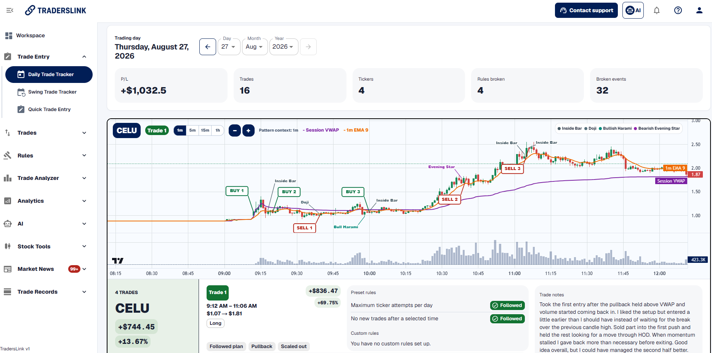
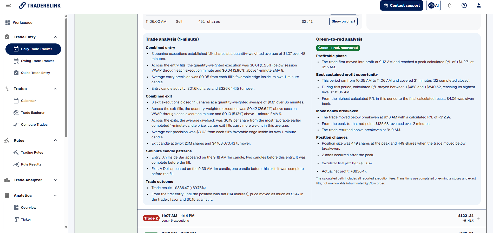
Trade Analyzer
See what happened inside a completed trade.
Open Trade Analyzer from a completed day or use it separately. Study entries, exits, candle context, and the path a trade took between them.
See how hammer candles and other chart patterns appeared during the trade.
Sign up free
Trade Analyzer
Study how each entry and exit unfolded.
Review execution context around the points where a trade began and ended. Use the completed trade to study timing, price action, and the choices made at each point.
Sign up free
Trade Analyzer
See candle patterns in the trades you actually took.
Review detected candlestick patterns—including hammer candles—alongside entry and exit timing, price action, and the trade’s eventual result.
See how often a pattern appeared in your own completed trades, then open the supporting examples instead of relying on a generic chart setup.
Sign up free
Trade Analyzer
Measure the opportunity and risk inside a trade.
Use MFE and MAE to study favorable and adverse movement during a completed trade, then connect that data to later entry, exit, and risk-management decisions.
Sign up free
Trade Analyzer
Make profit capture and giveback visible.
Green-to-red analysis follows a trade after it first moves into profit. See the best sustained opportunity that remained available, how much profit you captured, and how much was given back before the exit.
Break results down by how long a trade stayed green after its profit peak, then spot whether profit taking, later exits, or risk-management decisions are improving or hurting your results. Use the data to make more informed adjustments to protecting gains, taking partial profits, and managing risk.
Trade Analytics
See when your trading has worked best.
Review results across sessions and times to find the conditions that deserve more attention in your own trading history.
Sign up free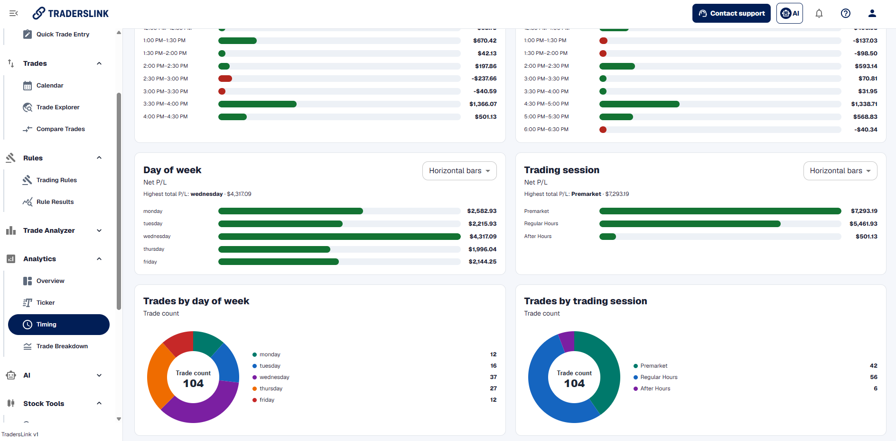
Trade Analytics
Break down the patterns across your trades.
Explore completed trades by ticker, entry price, position size, holding time, session, and more. See which stock price ranges have produced your most profitable trades—and which have not—rather than relying on one total result.
Find the small-cap price ranges and trade conditions that are working in your own recorded trading.
Sign up free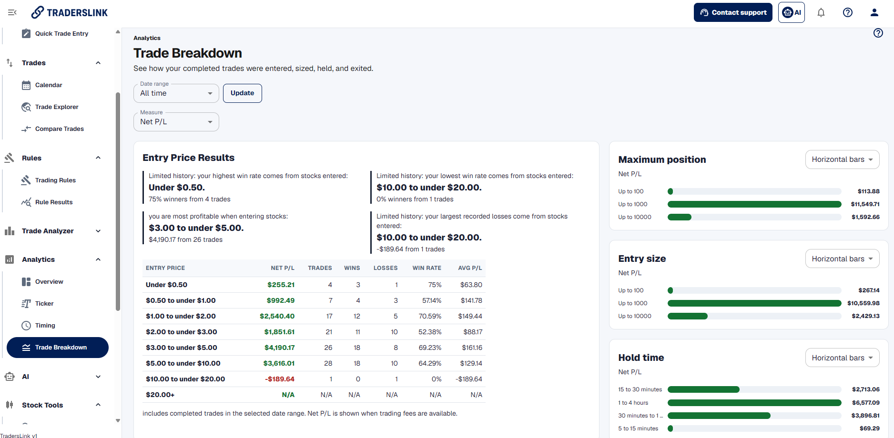
Ticker Analytics
See the results behind each ticker.
Review the tickers you have traded by their results, win rate, and the individual trades behind them. See which stocks have been worth returning to and which ones have repeatedly worked against your trading.
Use the ticker view with price-range results to understand whether the issue is the stock, the price you traded it at, or the way the trade was managed.
Sign up free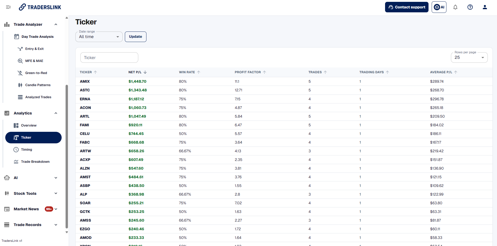
Trade Analytics
Find the exact trades you want to study.
Filter, sort, and move through a detailed view of your recorded results. Start with the trades, dates, tickers, direction, or result that needs attention.
Sign up free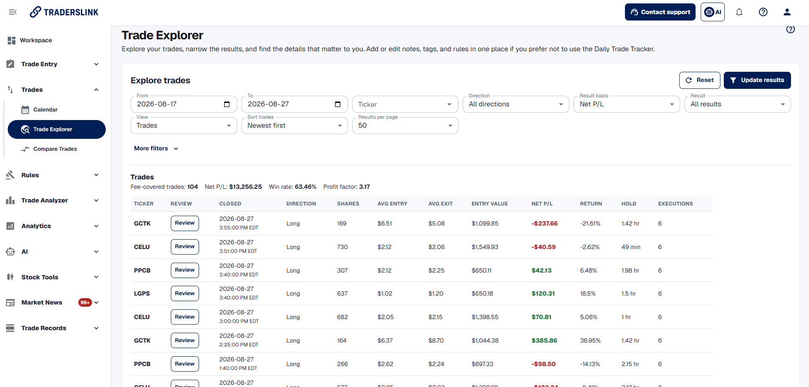
Trade Analytics
Compare trades that share a setup.
Bring similar trades together to see how the entries, exits, and results differed. Move beyond a total result to the choices that separated stronger trades from weaker ones.
Sign up free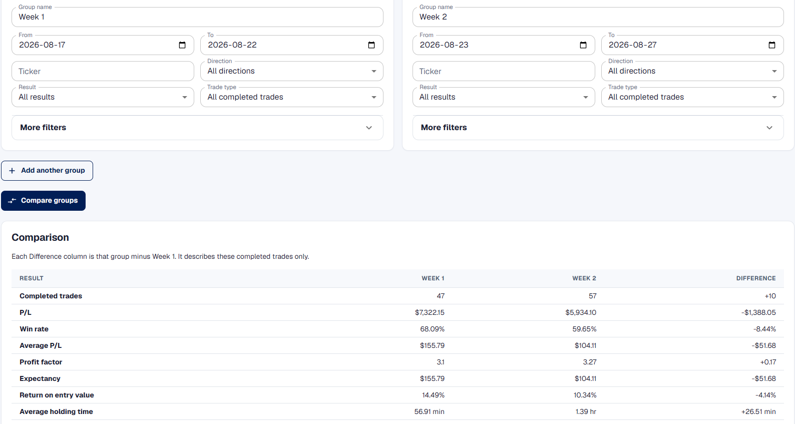
Trading Tools
Trading tools for small-cap day traders.
Start the trading day with tools that help you react quickly: generated support and resistance levels, press-release alerts, and halt alerts.
Sign up free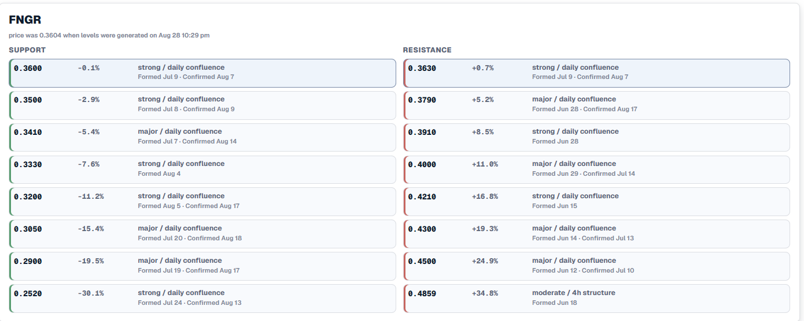
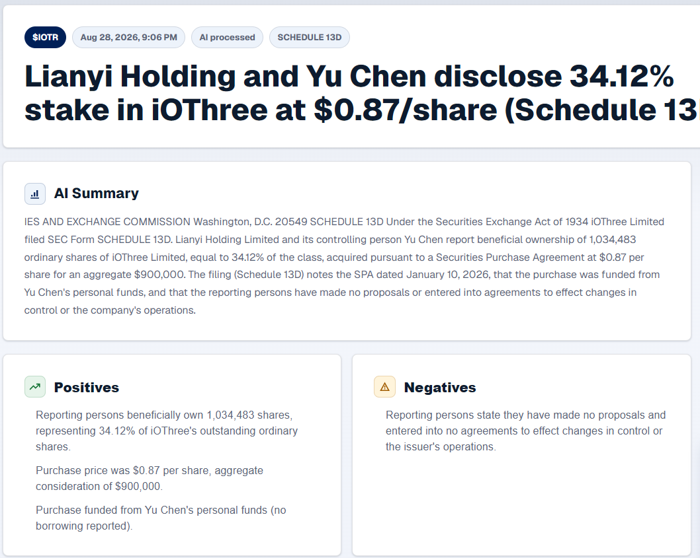
Trade journaling
Manage your trading record
Build a fuller record of every trading day with rule results, trade notes, session notes, tags, a weekly calendar, and Trade Imports.
Trading rules are part of the day review.
Set the rules that matter to your trading. TradersLink automatically checks the recorded trades, and Rule Results shows which rules were followed and which were broken inside the full-day review.
Sign up free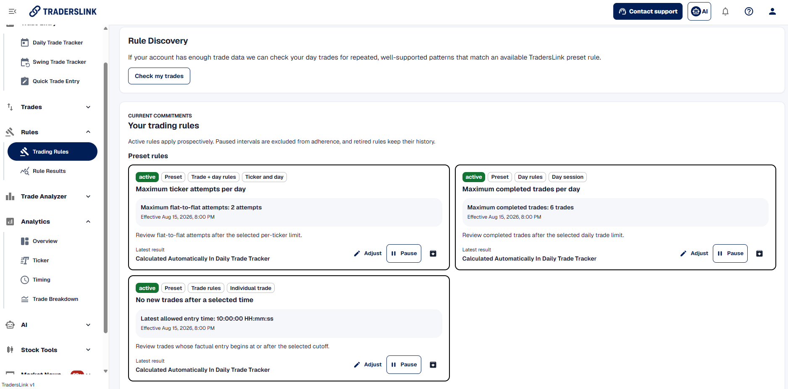
Keep the thinking behind a trade.
Write down what you saw, why you entered, what changed, and what you would handle differently. Trade notes stay attached to the ticker and its executions, rules, and tags.
Sign up free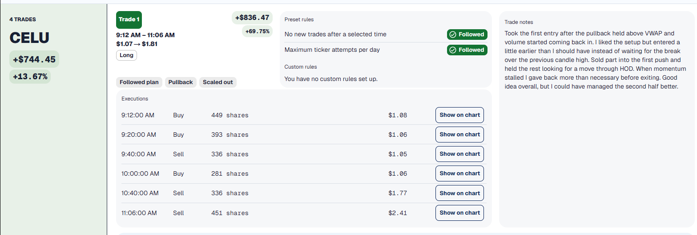
Close the day with session notes.
Capture what worked, what needs work, and the technical recap from the whole session. Keep current focuses visible from one Daily Trade Tracker review to the next, so the habits you are working on stay in view.
Sign up free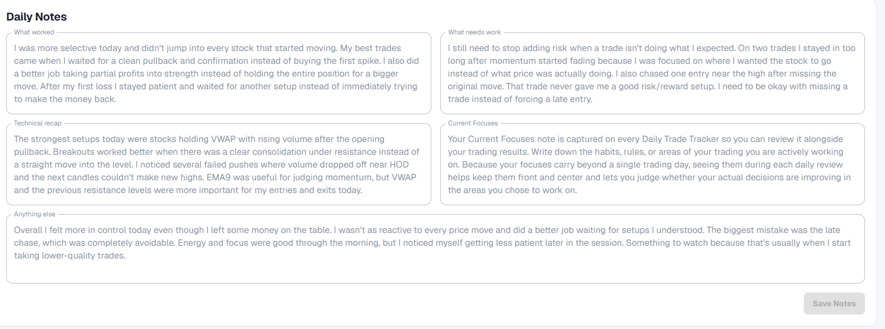
Tag the setup, execution, and exit.
Use preset tag categories for setups, entry and execution, exits, and emotions—or create your own tags for the patterns you want to study. Tags make it easier to filter, compare, and review the trades that have something in common.
Sign up freeSee the trading week, not only one day.
Move from a single Daily Trade Tracker record to a weekly calendar view, then open a day drawer to see the trades, notes, rules, and tags behind it.
Sign up free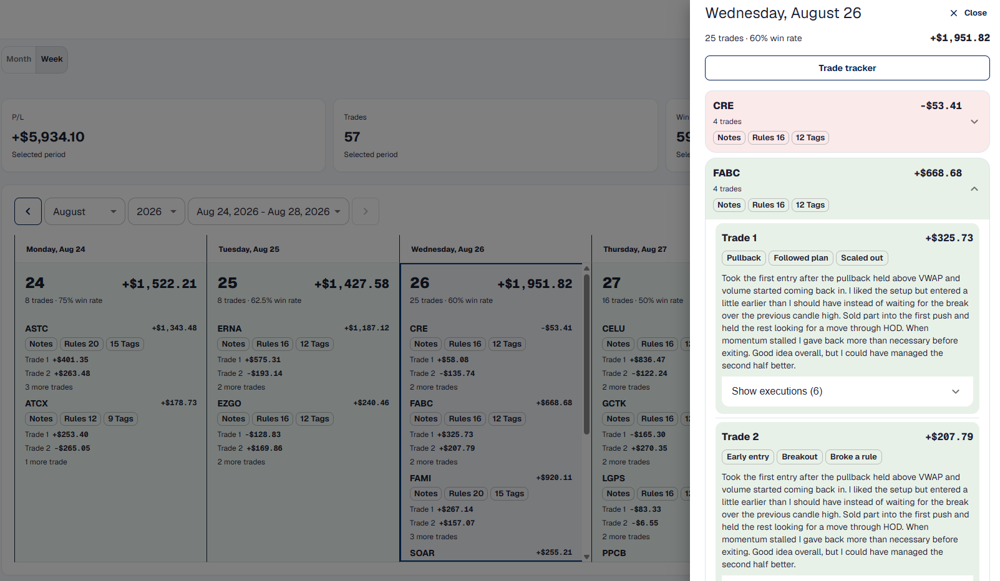
Bring in broker statement trades.
Trade Imports uses import mapping to bring broker statements into TradersLink. When a statement cannot be mapped normally, it can be sent to AI-assisted mapping for review.
Sign up freeCreate your free account.
Start using the TradersLink Dashboard for journaling, analysis, and trading tools.
Sign up freeNo credit card required.